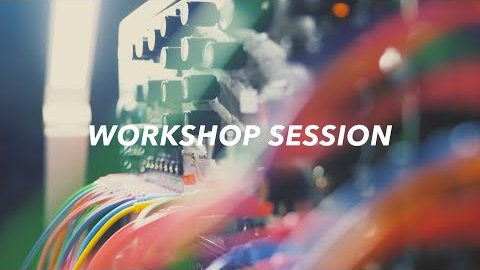
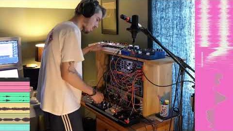

rose.null music systemliens
écouter


voir
6
 07CONTREBANDE.S #7 - Adrian Edeline, Louis Rose, Jérôme Arrighi et Tiss Rodriguezvidéo · youtube
07CONTREBANDE.S #7 - Adrian Edeline, Louis Rose, Jérôme Arrighi et Tiss Rodriguezvidéo · youtube
08Workshop Session - CD x Louis Rosevidéo · youtube
09Cry – live improvisation from homevidéo · youtube 10ringsresonatormodulartor56130gresdutkp$ô ùlvidéo · youtube
10ringsresonatormodulartor56130gresdutkp$ô ùlvidéo · youtube 11Vol d'Oiseauvidéo · youtube
11Vol d'Oiseauvidéo · youtube 12"Entre Ciel et Fer" - Bande Son Originalevidéo · youtube
12"Entre Ciel et Fer" - Bande Son Originalevidéo · youtube